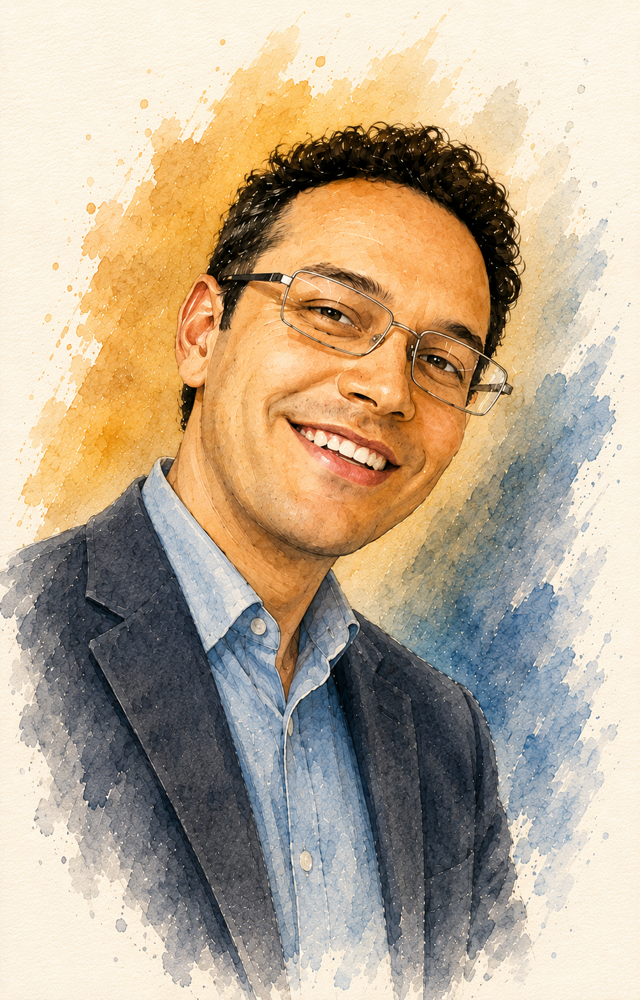
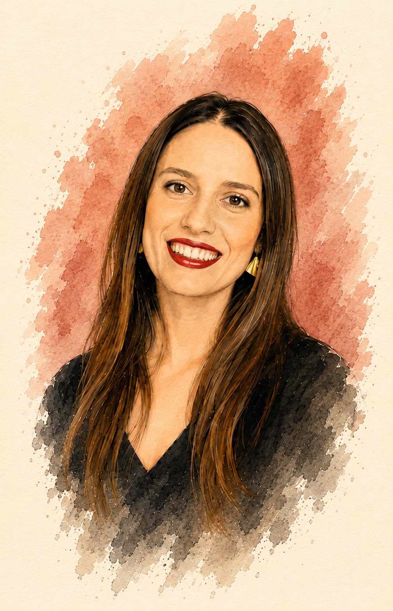
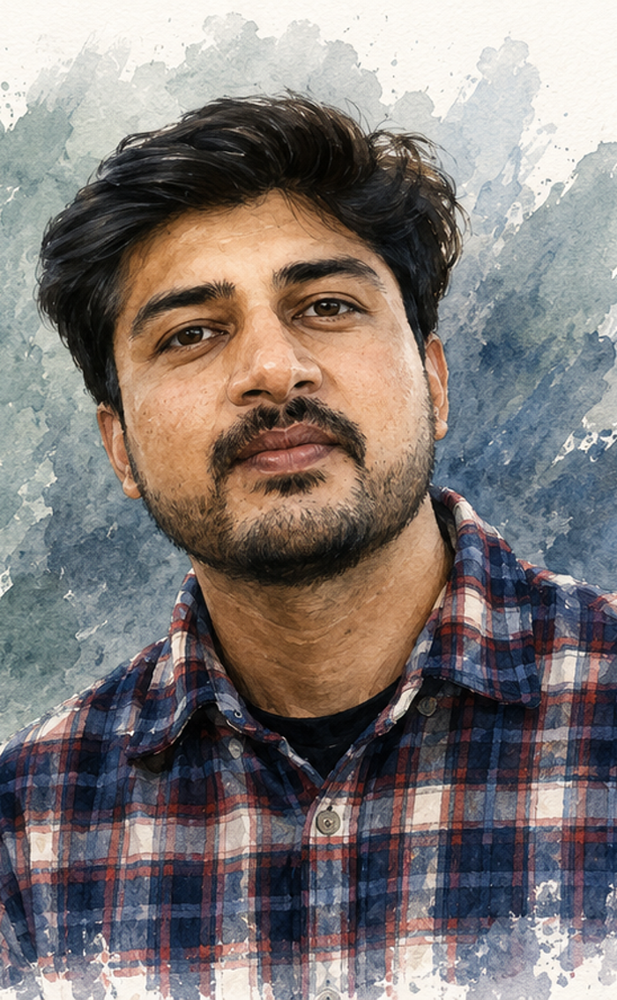
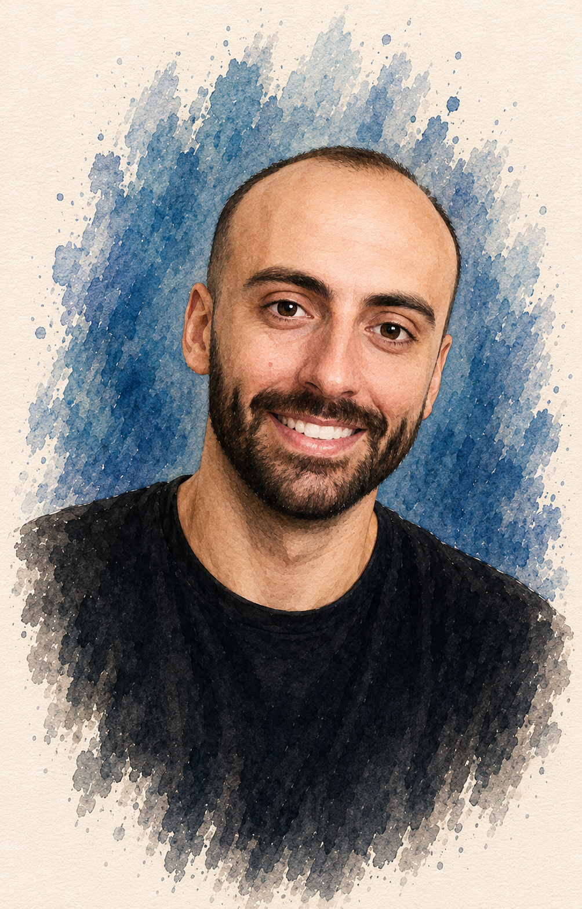
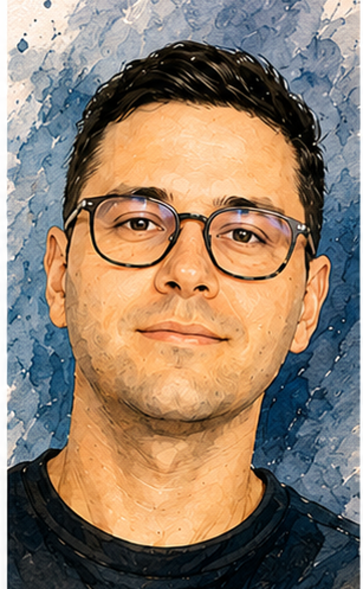

Multiferroics, magnetoelectric switching, topological defects, and quantum geometry in complex magnets.
We develop realistic models for emergent phenomena in quantum materials. We study static properties and dynamic phenomena in materals with complex orders, such as noncollinear magnets, multiferroics, ferroelectric domain structures. We closely collaborate with experimentalists to interpret puzzling data.

Multiferroics, magnetoelectric switching, topological defects, and quantum geometry in complex magnets.

Noncollinear magnets, magnon thermal conductivity, and electric-field-driven domain wall motion in spin spirals.
Quantum metric effects, topological pumping of bimerons, merons, and fast ferrimagnetic domain-wall dynamics.

Magnetic interactions at finite-temperatures, electron-phonon and spin-phonon coupling, first-principles simulations, multiferroics.

relativistic domain wall motion in ferrimagnets and non-uniform materials

Ultrafast laser-induced spin dynamics, antiferromagnetic writing via magnetoelectric fields, spin-lattice coupling, and nonlinear magnon transport.
Landau theory, multiferroics, topological switching.
A phase-space treatment of quantum geometry puts real-space and momentum-space effects on equal footing for transport and optical phenomena.
We develop theory of heat transport in noncollinear magnets. Spin noncollinearity leads to three-magnon processes that reduce thermal conductivity. We uncover the relaxons, relaxation modes in the space of magnon occupations, that govern magnetic thermal conductivity.
With experimental colleagues from Vienna we use electric fields to map the energy landscape of materials with topological order parameter switching process.
Composition gradients in ferrimagnets are shown to enable new physical mechanisms for domain wall acceleration, with potential for faster racetrack and THz spintronic devices.
We introduce an ab-initio approach to study temperature dependence of exchange interactions, discuss the mechanisms that govern the temperature dependence and find 10% increase in exchange interactions at room temperature in Cr2O3.